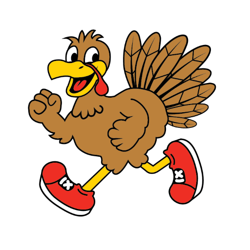

Big smiles.
Little strides.
Everybody trots.
A 5K with your favorite people. A Thanksgiving morning to remember. Join the 21st Annual Mini-Cassia Turkey Trot!
Nov. 26, 2026 · 9 AM · Paul, Idaho
Early entry is $20 per participant. Sign up through RaceEntry.

- MARK THE DAY
- Thanksgiving, Nov. 26
- PICK YOUR PACE
- 5K run or walk
- MEET YOUR PEOPLE
- West Minico School
- LET'S GET GOING
- 9 AM Mountain


Your kind of pace.
Your kind of people.
Some come to run. Some come to walk. Everyone brings a little something to this Thanksgiving tradition.
- Bring your crew. All ages and abilities are welcome.
- Bring your spirit. Costumes make the morning brighter.
- Bring your layers. November in Idaho can be chilly.
Last year, 1,272 participants showed up to make memories. Let's make a few more.
Take a peek at the photos ↗One happy morning.
Here's the plan.
- Hello, race day!Check in at the West Minico gym.
- Off we trot.The 5K starts on the school track.
- One more cheer.Awards ceremony; timing may vary.
A little planning.
A lot more fun.
West Minico Middle School
155 S 600 W, Paul, Idaho
Come early to park and check in. The 5K loops through the neighborhood and returns to the school track.
Entry includes timing, finish-line treats, and a commemorative shirt while supplies last.
Parking + race-day detailsDo we all need to register?
Yes. Complete a separate registration for every participant, including children. That makes sure everyone has their own entry and waiver.
What does it cost?
Early entry is $20 before November 2. Standard online entry is $25 beginning November 2, and race-day registration is $30 from 8–9 AM. Check RaceEntry for final charges.
Is it okay if we walk?
Of course! The 5K welcomes walkers. Please start toward the back of the field to give faster runners room.
Can our dog or stroller come?
These policies aren't confirmed in the current 2026 information. Check with the organizers before bringing a dog or stroller.
Can we help instead of race?
Yes! There are opportunities to help make race morning happen. Explore the volunteer roles and contact the team.
Make room for one more tradition.
The turkey can wait. Your people are at the starting line.